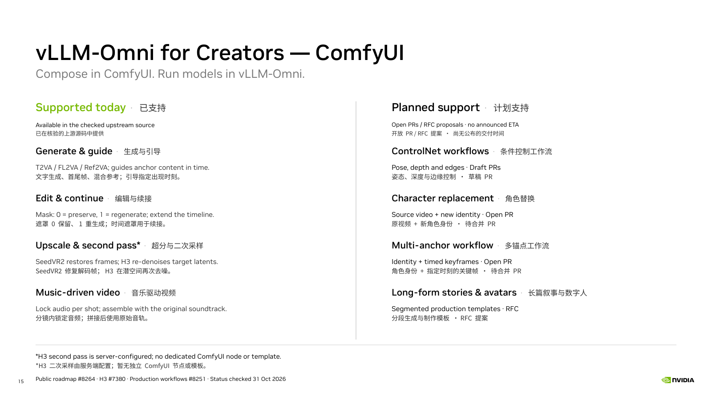

ComfyUI composes the workflow and sends requests to local or remote vLLM-Omni inference services. The service returns generated media to the graph. Official images illustrate the architecture and interface; their settings are not the benchmark configuration.
ComfyUI: available upstream
Verified against upstream main · 31 October 2026 · 08177216

The official extension connects a ComfyUI workflow to a local or remote vLLM-Omni service. Generation runs on the service; the client composes the workflow and handles inputs and outputs. Image, video, speech, music and multimodal nodes exist, but the selected model and API determine which inputs and operations work. Pinned official README · Current integration documentation
The H3 all-in-one workflow covers text-driven generation, first/last-frame conditioning and mixed references. It does not include a prompt-assistance LLM. A separate music-video workflow constructs shots from slices of an existing track and assembles them with the original audio. H3 all-in-one guide · H3 music-video guide
This is a source review, not a new inference test. The screenshot is the official UI example and does not specify the benchmark settings used earlier in this talk. The statement is pinned to main, not a promise that every item is in every released package.
H3 second-pass refinement generates a base latent, optionally upscales it, then re-noises and resumes the tail of the denoising schedule. It is supported through H3 server configuration, with no dedicated second-pass node or example template in the checked ComfyUI extension. Request-mode serving is required, and learned latent upscaling needs its separate checkpoint. SeedVR2 restoration is a different model and workflow. These capabilities were checked in upstream source; this slide does not claim a new real-model validation. Current ComfyUI parameter UI · Pinned evidence and scope.
Planned support
The public Q4 roadmap includes ComfyUI integration. The items below are open implementation work or RFC proposals, not committed delivery dates. Current code takes precedence over stale RFC checkboxes.
Existing bounded continuation differs from the proposed long-form production graphs. Timeline-guide nodes already exist; the proposed multi-anchor template combines them with an identity reference.
Video Studio: planned open-source tool
Expected open-source release: early November 2026 · working title
The presenter plans to open-source a developer tool for end-to-end video generation and editing, using compatible models served by vLLM-Omni. “Video Studio” is a descriptive working title. The diagram illustrates the intended workflow; it does not represent a released product or a completed integration. The presenter expects an open-source release in early November 2026. This is a planned window; no exact release date, public repository or validated model matrix is being announced here.
Build with vLLM-Omni
Three presenter-supplied WeChat community invitations. The original images state that the codes are valid before 7 November 2026. Decoding was checked; group admission was not tested.
vLLM on Bilibili — Official channel · vllm_project.Open channel · Download channel QR. The public account API confirms the account name and ID; the channel maintainer links this exact profile as the vLLM Bilibili channel. The QR uses the direct profile URL without tracking parameters. The WeChat invitation expiry does not apply to this link.
Speaker notes for slide 15 (the former slide 14). Availability checked against upstream 08177216 on 31 October 2026; no new inference was run for this presentation update.
Text, keyframes and mixed references
Supported template. Start from a text prompt, constrain the first and/or last frame, or supply image, video and audio references. The connected inputs select T2VA, FL2VA or Ref2VA. These are alternative generation modes; the service must load the matching checkpoint partition. Official source
Timeline guides
Supported nodes and template. Place an image, video or audio guide at a chosen frame of the output. For example, frame 36 is 1.5 seconds at 24 FPS. This controls when supplied content appears. Requires base H3; the current guide path rejects FastH3, nonzero request LoRA and latent-mask editing. Official source
Inpainting and removal
Supported latent-mask template. Supply a source video and a spatial mask. Preserve the unmasked context and regenerate the selected region: remove an object or describe replacement content. A separate audio mask decides whether source audio is preserved or regenerated. Official source
Continuation and extension
Supported latent-mask template. Use a temporal mask to retain an initial part and regenerate the remaining interval, or request a longer duration to add new content after the source. This editing workflow is distinct from the rolling AV-tail implementation in our interactive demo. Official source
SeedVR2 upscale / restoration
Supported local and remote workflows. Generate an H3 clip, then restore or upscale its decoded frames with a separate SeedVR2 model. Preserve the generated audio and FPS. The local template uses a ComfyUI SeedVR2 extension; the remote route calls a separate vLLM-Omni SeedVR2 service. Official source
H3 second-pass refinement
Backend capability; server-configured. Generate a base latent, optionally upscale that latent, add noise and run the tail of the H3 denoising schedule before VAE decoding. This can change visual details and audio. It is request-mode only, rejects latent-tail continuation and latent-mask editing, and currently has no dedicated ComfyUI node or template. Official source
Music-driven video
Supported supplied-track template. Supply a music track and a character/style image. Slice the track, generate one Ref2VA shot per slice with locked source audio, then join the shots and restore the original recording as the final soundtrack. Shots share the reference image but do not carry latent history between requests; cuts are expected. Official source
ControlNet workflows
Draft PRs; not merged. Use pose, depth or edge hints to constrain motion and composition. The proposed workflow offers Canny, Depth, Pose, HED, MLSD and Inpaint controls. Dependencies and quality validation remain; do not present it as available on main. Official source
Character replacement
Open PR; not merged. Combine a source video and a new character reference to replace the subject while aiming to retain the original motion and scene. Backend dependencies and quality validation remain. Official source
Multi-anchor workflow
Open template PR; not merged. Combine an identity reference with several time-indexed image anchors in one ready-to-run graph. Reference and timeline-guide nodes already exist; the pending item is the combined template, not the entire guide capability. Official source
Long-form stories and avatars
RFC proposals. Compose multiple bounded shots or continuation segments into story, dialogue and repeatable-avatar workflows, with explicit boundary and audio handling. This is a proposed workflow family, not a promise of unlimited single-request generation or real-time performance. Official source
Workflow translations / 工作流中英对照
English
中文
Generate & guide
生成与引导
T2VA / FL2VA / Ref2VA; guides anchor content in time.
文字生成、首尾帧、混合参考；引导指定出现时刻。
Edit & continue
编辑与续接
Mask: 0 = preserve, 1 = regenerate; extend the timeline.